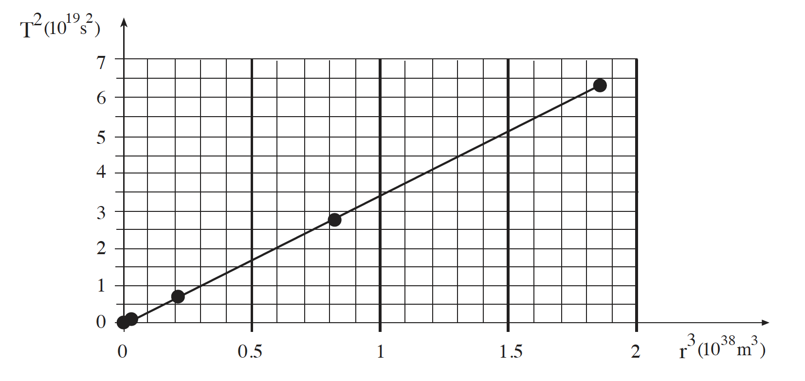
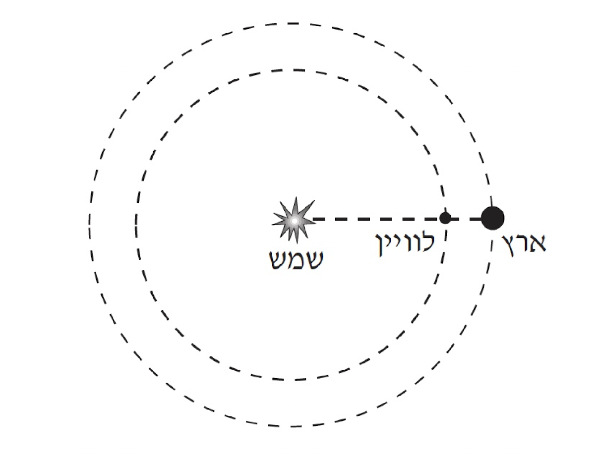

שאלה 5
פַּתְחוּ את החוק השלישי של קפלר (בנוגע למסלולים מעגליים)
על פי חוק הגרוויטציה של ניוטון. (10 נקודות)
התרשים שלפניכם מציג גרף של T2 (ביחידות 1019 s2) כפונקציה
של r3 (ביחידות 1038 m3) עבור 5 כוכבי לכת.
T – משך הזמן שבו כוכב לכת מקיף את השמש.
r – מרחק כוכב הלכת ממרכז השמש.

(1) חשבו את שיפוע הגרף. (5 נקודות)
(2) חשבו בעזרת שיפוע הגרף את מסת השמש. (5 נקודות)
לוויין, שנבנה לצורך תצפיות על השמש, נע במסלול מעגלי סביב השמש.
הלוויין נמצא כל הזמן על הקו המחבר את השמש לארץ, כמתואר בתרשים.

(מרחק הלוויין מכדור הארץ קבוע.
הניחו שגם המסלול של כדור הארץ
סביב השמש הוא מעגל.)
זמן המחזור של הלוויין בתנועתו סביב השמש
הוא שנה אחת.
רשמו את החוק השני של ניוטון עבור תנועת הלוויין,
באמצעות חמשת הגדלים שלפניכם:
r – הרדיוס של מסלול התנועה של כדור הארץ סביב השמש
ω – התדירות הזוויתית של תנועת כדור הארץ סביב השמש
MS – מסת השמש
ME – מסת כדור הארץ
x – המרחק בין הלוויין לארץ
(8 נקודות)
הערה: אין צורך לפתור את המשוואה.
כדור הארץ והלוויין נעים בזמני מחזור זהים, אך רדיוסי המסלולים שלהם שונים.
מכאן נובע שהלוויין אינו מקיים (ביחס לשמש) את החוק השלישי של קפלר
למסלולים מעגליים.
הסבירו מהי הסיבה הפיזיקלית לאי-קיום חוק זה? (513 נקודות)